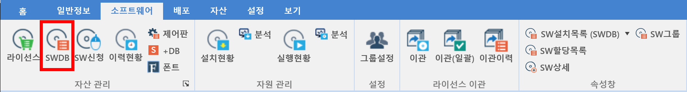

5-1-2. SWDB
5-1-2. SWDB
Source: https://www.sweeper.or.kr/etc/manual/5-1-2SWDB.html
5-1-2. SWDB


관리 소프트웨어 목록으로 제조사 및 상용유형으로 분류되어 있으며, 라이선스 정보를 관리할 수 있습니다. SWDB는 SPC에서 제공하는 소프트웨어 DB로 관리에 필요한 소프트웨어를 제공하고 있습니다. 만약 DB에 존재하지 않는 소프트웨어는 추가 등록 및 관리가 가능합니다.

- 우클릭 명령 (관리 선택/해제)

- 우클릭 명령 (모니터링 선택/해제)

- 우클릭 명령 (복사)

-
주요기능
-
SWDB 추가
-
새로운 SWDB를 등록하기 위한 기능입니다.
-
SWDB 수정
-
등록한 SWDB를 수정하기 위한 기능입니다.
-
SWDB 삭제
-
등록한 SWDB를 삭제하기 위한 기능입니다.
-
빌트인 된 SWDB는 삭제할 수 없습니다.
참고사항
-
소프트웨어는 관리로 지정되어야만, 해당 소프트웨어에 대한 관리(모니터링, 실행차단, 라이선스 제어 등)를 할 수 있습니다.
-
(중요) 소프트웨어가 미관리로 지정되면, 해당 소프트웨어에 대해 지급된 라이선스들이 모두 자동 회수 되며, 이력현황(할당및 회수이력)에 기록됩니다.
-
본 메뉴에서는 프린트 기능이 제공되지 않습니다.
© Copyright SWeeper Inc.. All Rights Reserved